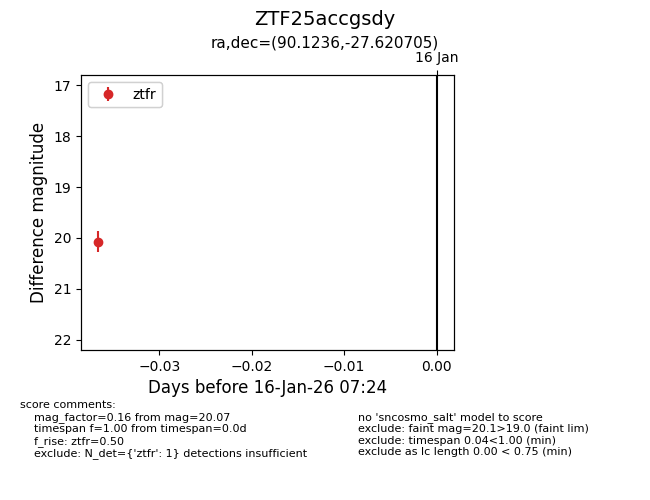
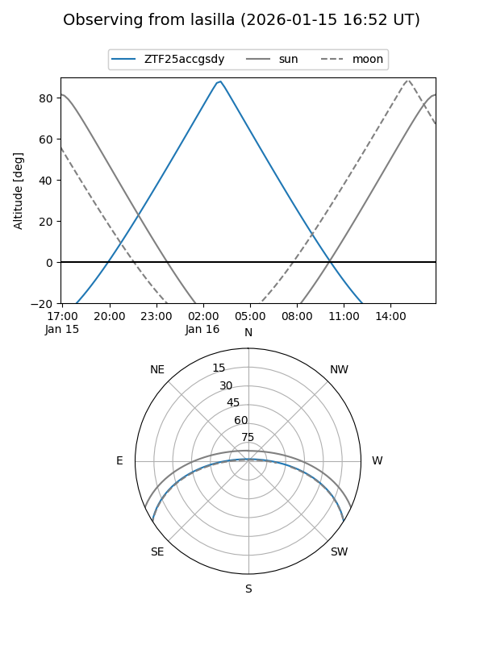

ZTF25accgsdy
Target ZTF25accgsdy at 2026-01-18 07:30
Aliases and brokers:
FINK: link
Lasair: link
ALeRCE: link
alt names
ZTF25accgsdy (ztf,fink_ztf)
Coordinates:
equatorial (ra, dec) = 90.1236,-27.62071
equatorial (HMS+DMS) = 06:00:29.65,-27:37:14.54
galactic (l, b) = (233.4563,-22.65902)
Flags:
Photometry:
last ztfr=20.07
1 ztfr detections
Lightcurve

Visibility


Additional plots